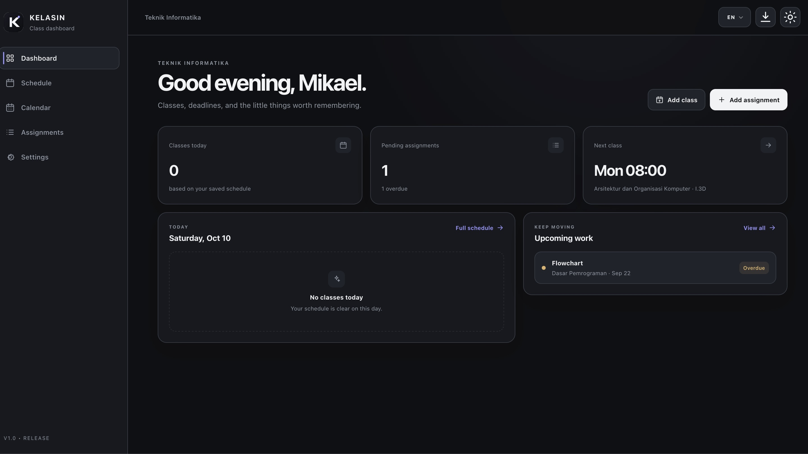
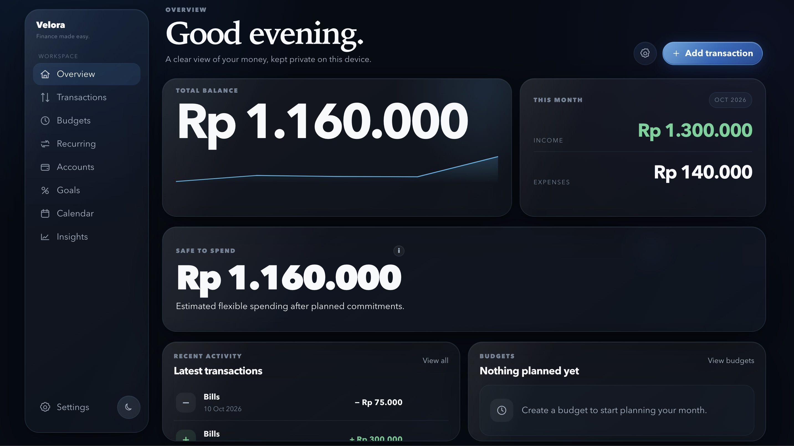
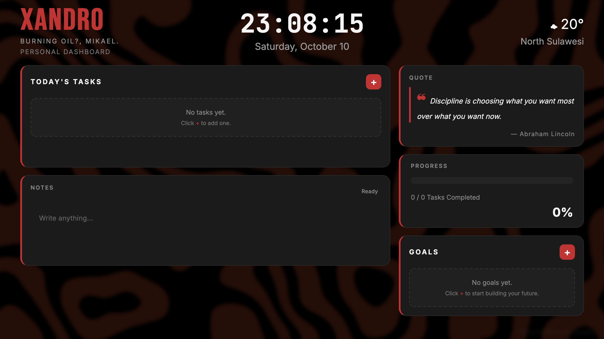

01 / PRODUCTIVITYStudent workspace · Local-first
KELASIN.
A focused space for recurring classes, assignments, lecturers, holidays, and academic planning. No account or a cloud dependency needed.
Informatics Engineering Student / Indonesia
Frontend development · Web Design · Visual Editor
I like building digital things from the first rough idea to the smallest interaction. Clear in purpose, considered in the details, and made to work in the real world.
01 / SELECTED WORK
A few personal projects shaped around everyday problems. Each one is a chance to make something useful, then keep refining it until the details feel right.

01 / PRODUCTIVITYStudent workspace · Local-first
A focused space for recurring classes, assignments, lecturers, holidays, and academic planning. No account or a cloud dependency needed.

02 / FINANCEPersonal finance · Privacy-first
A private budgeting workspace for income, spending, recurring costs, and savings goals. Your financial data stays in your browser.

03 / DAILY SYSTEMSPersonal dashboard · Productivity
A personal dashboard for the daily essentials: tasks, notes, goals, weather, and progress, wrapped in a quiet, atmospheric interface.
02 / A LITTLE ABOUT ME
The best part of making something is getting the details to work together: the structure, the experience, and the feeling it leaves behind.
I’m an Informatics Engineering student in Indonesia with a strong interest in frontend development, digital design, and visual storytelling.
I enjoy taking an idea and making it into life byplanning the flow, building the interface, working through the edge cases, and polishing the small things that make a product feel complete. Most of my learning happens by building and improving real projects.
I’m especially interested in tools that feel simple to use, respect the person using them, and solve a real problem without getting in the way.
03 / WHAT I CAN HELP WITH
For personal brands, small businesses, or someone with a good idea who needs a thoughtful digital starting point.
Purpose-built pages with responsive layouts, clear messaging, and the details tuned for real devices.
A cleaner structure, more intuitive flows, and a visual system that feels consistent instead of crowded.
Careful cuts, color, and finishing for social content, personal projects, and brand visuals.
Tell me what you're working on, what isn't working yet, or what you'd like to make real. We can start there.
Let's talk biasedfilmsdotnet@gmail.com